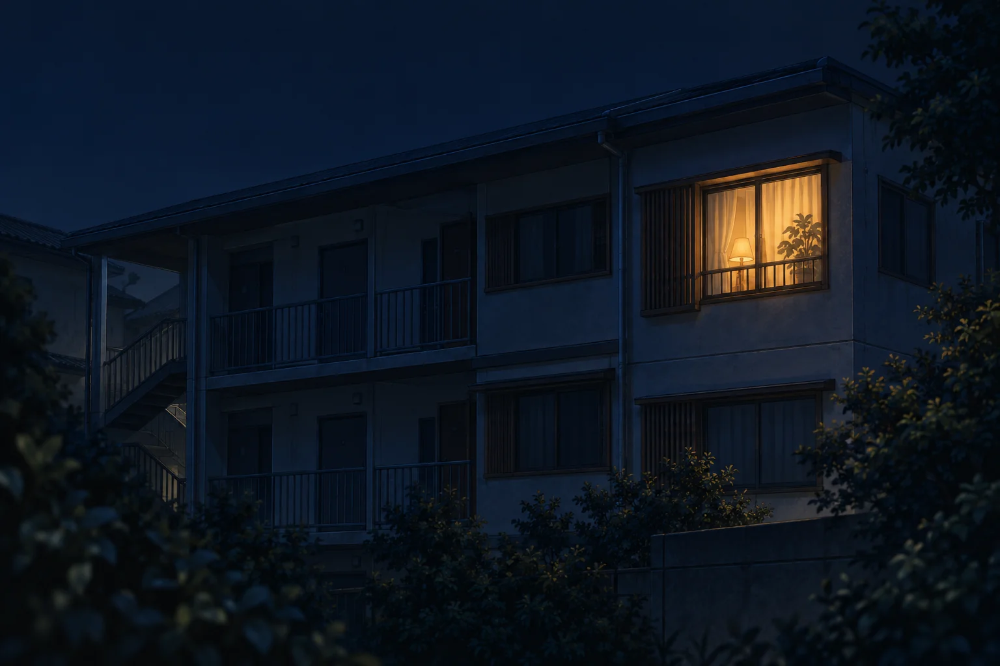

01 アルバム
話した時間が、
ふたりの過去になる。
何を話して、何を覚えているのか。
会話から残った記憶を、
好きなものも、頑張っていたことも。
なんでもない日が、
覚えてほしくない記憶は、自分で参照から外せます。
ひとつの記憶を開いてみる 

会話を覚え、関係が育つAIチャット
今日のことを、
昨日話したことが、今日の会話につながる。
何気ないやりとりから、
それが、Memoriaです。
iOS / Android で配信中
話したあとの、つづきを見る
Memoriaでできること
話す。覚えている。また会う。
ひとつのやりとりが、
画面・会話は紹介用のものです。一部、次回アップデートの内容を含みます。
01 アルバム
何を話して、何を覚えているのか。
会話から残った記憶を、
好きなものも、頑張っていたことも。
なんでもない日が、
02 ホーム
アプリを開くと、あなたの子が迎えてくれる。
言葉を交わすたび、
「おかえり。」が、
少しずつ、ふたりの言葉になる。

会話の外にも、つづきがある。


05 今日の一枚
次回アップデートで追加予定
気になるカードに触れて、一日一枚。
引いたカードに、
何を話そうか決めていない日にも、
まずは、一緒に一枚引いてみる。
これまでのカードと言葉も、


Memoriaという場所
大きな出来事じゃなくていい。
うれしかったこと、しんどかったこと、
なんでもない一日のこと。
話すたび、開くたび。
この場所に、ふたりの時間が増えていく。

Memoriaをダウンロード
まずはひとりを迎えて、
今日のことを話してみてください。
iOS / Android で配信中